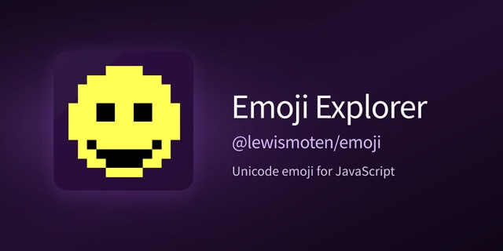

Emoji Explorer
Unicode and pixel font

A localized, installable Unicode emoji explorer with sequence filters and offline support, plus a 12 x 12 Pixel Emoji font and an npm package of lookup packs.
Executive summary
Why it exists
Emoji keep growing, and operating-system fonts on older devices stop updating. Finding the right sequence, such as a skin-tone, hair, gender, family, or joined (ZWJ) variant, is also harder than it looks.
Outcome
A live explorer, a downloadable fallback font, and a typed npm package where editors autocomplete exact emoji keys and show the emoji name and glyph in declaration comments.
My role
Author and maintainer.
Technical overview
How it works
Three connected projects in one repository. Emoji Explorer is a localized research and discovery app with search, version and sequence filters, sequence visualization, rendering diagnostics, favorites, keyboard navigation, and offline support. Pixel Emoji is an original 12 x 12 color font with a pixel-art editor, made to give newer emoji to devices with outdated fonts. The npm package @lewismoten/emoji holds typed lookup packs of every Unicode-recommended fully-qualified sequence.
Hard parts
Keeping proposed Emoji 18.0 candidates separate from released emoji across the package, the Explorer, and the font. The root export is a small curated pack, and the full lookup is imported only when needed, in both ES module and CommonJS forms.